의류기사 (2003-05-25 기출문제)
1과목: 피복재료학
1. 양모섬유에 있어서 흡수량은 강도와 신도에 각각 어떤 영향을 미치는가?
- 강도는 감소, 신도는 증가
- 강도, 신도 모두 증가
- 강도, 신도 모두 감소
- 신도 감소, 강도 증가
(정답률: 알수없음)

2. 탄소 섬유의 특징이 아닌 것은?
- 다른 섬유보다 탄성율이 월등히 크다.
- 다른 섬유보다 비중이 적다.
- 다른 섬유보다 강도가 크다.
- 내열성과 내약품성은 스테인레스강보다 우수하다.
(정답률: 알수없음)
3. 다음중에서 견섬유가 주로 가지고 있는 아미노(Amino)산이 아닌 것은?
- 글리신(glycine)
- 알라닌(alanine)
- 세린(serine)
- 시스틴(cystine)
(정답률: 알수없음)
4. 나일론과 폴리에스테르의 방사 방법은?
- 건식방사
- 습식방사
- 용융방사
- 스플리트방사
(정답률: 알수없음)
5. 어떤 섬유를 현미경으로 보았더니 단면이 삼각형을 가지고 있었으며, 5% NaOH 용액에 넣고 가열하였더니 녹았다. 이 섬유는?
- 레이온
- 양모
- 견
- 나일론
(정답률: 알수없음)
6. 면사 30번수의 실의 길이가 168000야드이면 그 실의 중량(g)은? (단, 1 lb는 453.6g으로 환산하시오)
- 2986 g
- 3024 g
- 3164 g
- 3106 g
(정답률: 알수없음)
7. 개버딘(gaberdine)은 어떤 조직으로 짜여진 직물인가?
- 능직
- 평직
- 바스켓직
- 주자직
(정답률: 알수없음)
8. 다음 강신도 곡선(Stress - strain curve)에서 가장 신도가 큰 섬유의 곡선은?
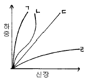
- ㄱ
- ㄴ
- ㄷ
- ㄹ
(정답률: 알수없음)
9. 비스코스 40%와 아세테이트 60%로 된 혼방사의 공정수분율은 어느 것인가?
- 8%
- 10%
- 8.3%
- 8.5%
(정답률: 알수없음)
10. 8매 주자직의 사용가능한 뜀수는?
- 1, 7
- 2, 6
- 3, 5
- 4, 4
(정답률: 알수없음)
11. 나일론 염색에 가장 적당한 염료는?
- 산성염료
- 직접염료
- 황화염료
- 배트염료
(정답률: 알수없음)
12. 다음 중 샌포라이즈 가공의 목적은?
- 방추
- 방축
- 방염
- 방수
(정답률: 알수없음)
13. 다음 중 축합중합 반응에 의해서 제조된 섬유는?
- 아세테이트(acetate)
- 폴리에스테르(polyester)
- 비닐론(vinylon)
- 폴리에틸렌(polyethylene)
(정답률: 알수없음)
14. 견뢰도 측정기와 측정견뢰도의 연결이 맞는 것은?
- 세탁견뢰도 - 퍼어스피로미터
- 일광견뢰도 - 페이드오미터
- 땀견뢰도 - 크록크미터
- 마찰견뢰도 - 로온드오미터
(정답률: 알수없음)
15. 다음 직물 중 다림질 안전온도가 가장 높은 것은?
- 견직물
- 모직물
- 면직물
- 아크릴직물
(정답률: 알수없음)
16. 신지잉(singeing)가공이란 무엇인가?
- 실이나 직물 표면의 잔털을 제거하는 법
- 면직물을 NaOH 용액으로 처리하는 방법
- 직물의 형체고정을 위한 일종의 수지가공법
- 계면활성제를 이용한 대전방지법
(정답률: 알수없음)
17. 고밀도 직물의 특성이 아닌 것은?
- 견고하다.
- 방풍성이 좋다.
- 방수성이 좋다.
- 통기성이 좋다.
(정답률: 알수없음)
18. 직물을 구성하는 경사와 위사의 교착방법을 무엇이라 하는가?
- 직물밀도
- 직물강도
- 직물조직
- 직물탄성
(정답률: 알수없음)
19. 중간과정인 실의 형성을 거치지 않고 직접 섬유로부터 만드는 직물은?
- 파일직
- 변화직
- 부직포
- 크레이프
(정답률: 알수없음)
20. 꼬임이 실에 미치는 영향이 아닌 것은?
- 실의 강도
- 실의 함기율
- 실의 광택
- 실의 색상
(정답률: 알수없음)
2과목: 피복환경학
21. 금속의 전기저항의 변화를 검출하여 기류를 측정하는 풍속계는?
- 풍차 풍속계
- 카타 한난계
- 열선 풍속계
- 서미스터 온도계
(정답률: 알수없음)
22. 피부온을 측정하는데 주로 사용되는 온도계는?
- Thermistor온도계
- 막대형 온도계
- 자기 온도계
- 최고 최저 온도계
(정답률: 알수없음)
23. 환경기온에 대한 변화가 적고 개인차가 가장 적은 피부 온도는?
- 이마
- 대퇴
- 등
- 배
(정답률: 알수없음)
24. 의복의 전 열저항이 0.86cal/℃ㆍm2ㆍhr이고 공기의 열저항이 0.14cal/℃ㆍm2ㆍhr일 때 이 의복의 보온력은?
- 1 clo
- 2 clo
- 3 clo
- 4 clo
(정답률: 알수없음)
25. 양산의 선택방법으로 옳은 것은?
- 겉은 엷은색, 안은 짙은색으로 고안된 것이 좋다.
- 천은 얇을수록 좋다.
- 천의 직통기공면적이 클수록 좋다.
- 표면이 매끈하고 평활한 것으로 짙은색이 좋다.
(정답률: 알수없음)
26. 용의상이나 방서상 여름철 의복에 적당한 피복면적은?
- 65%
- 75%
- 85%
- 95%
(정답률: 알수없음)
27. 부위별 피부온이 아래와 같을 때 평균피부온은 몇 도가 되는가?
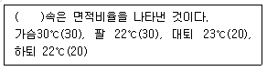
- 22.6℃
- 24.6℃
- 26.6℃
- 33℃
(정답률: 알수없음)
28. 피복재료의 투습성에 영향을 가장 적게 미치는 요인은?
- 함기량
- 직물의 가공
- 실의 밀도
- 섬유의 종류
(정답률: 알수없음)
29. 체온 변동에 관한 설명 중 옳은 것은?
- 소아의 체온은 성인보다 낮다.
- 건강인의 체온변동 폭은 0.6℃ 정도이다.
- 하루 중 체온이 가장 낮은 때는 오전 10-11시이다.
- 노인의 체온은 성인보다 높은 편이다.
(정답률: 알수없음)
30. 남자의 경우 구간부 의복기후로서 적합한 범위에 속하는 내의와 외의의 중량비는? (단, 기온 26℃ 이상)
- 내의 1 : 외의 1
- 내의 1 : 외의 3
- 내의 3 : 외의 1
- 내의 1 : 외의 2
(정답률: 알수없음)
31. 특히 보온에 중점을 두어 구비해야 할 의복은?
- 혈압이 높은 노인복
- 땀을 많이 흘리는 운동선수복
- 가을 등산복
- 잠수복
(정답률: 알수없음)
32. 기온이 높을 때 체온조절현상과 거리가 먼 것은?
- 피부혈관의 확장
- 한선의 분비 촉진
- 과대호흡에 의한 수분증발 증가
- 항이뇨호르몬의 분비 억제
(정답률: 알수없음)
33. 방서모와 관련된 내용 중 가장 부적당한 것은?
- 방서모는 열선 방어에 주력을 두고 환기를 다음으로 한다.
- 중량은 500g 이하로 한다.
- 극열 환경에서는 머리부의 냉각이 어느 다른 신체 부위의 냉각보다 효과적이 아니다.
- 고온에서는 드라이아이스 냉각은 효과적이다.
(정답률: 알수없음)
34. 신체의 연부(軟部)에 가해지는 의복압(衣服壓)의 위생학적인 허용치는?
- 40 g/cm2
- 80 g/cm2
- 4 Kg/cm2
- 2 Kg/cm2
(정답률: 알수없음)
35. 의복의 열차단력을 구하는데 꼭 필요한 요소가 아닌것은?
- 환경기온
- 피부온
- 체표면적
- 대기의 습도
(정답률: 알수없음)
36. 취침시에 관한 사항 중 잘못 설명된 것은?
- 숙면하고 있을 때의 대사량은 기초대사량의 70%이다.
- 쾌적한 침상기후는 29∼34℃, RH40∼50% 이다.
- 수면중에는 온열성 발한이 정지된다.
- 외기온이 낮을 때 특히 족부의 보온이 필요하다.
(정답률: 알수없음)
37. 인체에서 온열성 발한이 가장 적은 부위는?
- 발바닥
- 손등
- 이마
- 가슴
(정답률: 알수없음)
38. 용기에 시료를 덮지 않았을 때의 물의 감소량이 10g 이고 시료를 덮었을 때의 물의 감소량이 8g 일 때 이 직물의 투습도는?
- 20%
- 25%
- 75%
- 80%
(정답률: 알수없음)
39. 감각온도(Effective temperature)와 관계없는 것은?
- 온도
- 습도
- 기압
- 기류
(정답률: 알수없음)
40. 의복에 의한 기후조절 작용에 해당하지 않은 것은?
- 보온 작용
- 환기 작용
- 증발촉진 작용
- 오물흡착 작용
(정답률: 알수없음)
3과목: 의복설계학
41. 색상환에서 직접적인 보색을 피하고 대신 보색의 양옆에 있는 색상을 이용하여 세가지 색상으로 한 색채조화는?
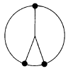
- 보색조화 (complementary harmony)
- 분보색조화 (split complementary harmony)
- 중보색조화 (double complementary harmony)
- 인접색상조화(analogous harmony)
(정답률: 알수없음)
42. 다음 그림 중 패거팅(Fagoting)은?
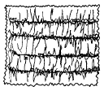
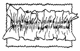
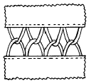
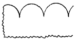
(정답률: 알수없음)
43. 150cm 나비의 감으로 플레어 180° 를 만들려고 한다. 준비해야 할 옷감의 양은 얼마인가?
- 60 - 70cm:스커어트길이 + 시접(6 - 8)
- 100 - 120cm:(스커어트길이 × 2) + 시접 (6 - 15)
- 130 - 150cm:(스커어트길이 × 1.5) + 시접 (6 - 15)
- 170 - 200cm:(스커어트길이 × 2.5) + 시접 (5 - 10)
(정답률: 알수없음)
44. 등급법(grading)이란?
- 종이에 패턴을 그리는 작업
- 천위에 형지 모양대로 완성선을 자르는 작업
- 잰 칫수에 맞게 본을 제도하여 자르는 작업
- 사이즈(size)별로 형지의 칫수를 조정하는 작업
(정답률: 알수없음)
45. 아동복(3~5세)의 기본 원형에서 소매산의 높이는?
- AㆍH/2
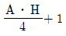
- AㆍH/3
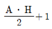
(정답률: 알수없음)
46. 다음 중 길원형과 소매원형을 결합하여 구성하지 않는 소매의 형태는?
- 라글란 슬리브(Raglan Sleeve)
- 돌만 슬리브(Dolman Sleeve)
- 기모노 슬리브(Kimono Sleeve)
- 카울 슬리브(Cowl Sleeve)
(정답률: 알수없음)
47. 앞, 뒤 암홀(AH)의 관계는?
- 앞, 뒤 암홀은 같은 것이 이상적이다.
- 뒤 암홀이 앞 암홀보다 조금 큰 것이 이상적이다.
- 뒤 암홀이 앞 암홀보다 조금 작은 것이 이상적이다.
- 상관 없다.
(정답률: 알수없음)
48. 여아복 앞길에 1cm짜리 스모킹으로 수를 놓으려고 한다. 스모킹 분량의 계산방법은?
- 총분량 = (완성된 넓이 - 2cm) × 2
- 총분량 = (완성된 넓이 - 1cm) × 2
- 총분량 = (완성된 넓이 - 2cm) × 3
- 총분량 = (완성된 넓이 - 1cm) × 3
(정답률: 알수없음)
49. 150cm 폭의 천으로 슬랙스를 만들려고 한다. 옷감량의 계산법은?
- 슬랙스길이 + 시접(10cm)
- {슬랙스길이 + 시접(10cm) × 1.2
- {슬랙스길이 + 시접(10cm) × 1.5
- (슬랙스길이 × 2) + 시접(10cm)
(정답률: 알수없음)
50. 그림과 같은 퍼프 소매(puff sleeve)의 패턴은?
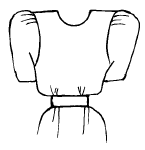
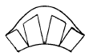
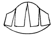
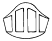
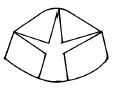
(정답률: 알수없음)
51. 다음 중 hourglass silhouette이라 볼 수 없는 것은?
- empire silhouette
- fitted silhouette
- mermaid silhouette
- minaret silhouette
(정답률: 알수없음)
52. 단추구멍 크기를 정하는 일반적인 방법은?
- 단추지름 + 단추두께(0.3cm)
- 단추지름
- 단추 반지름 × 2 + 1
- 단추 반지름 + 두께
(정답률: 알수없음)
53. 아래와 같은 방법으로 낱개의 꽃이나 조그마한 꽃을 수놓는데 사용하는 스티치 방법은?
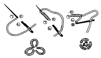
- 위빙스티치
- 아우트라인 스티치
- 블리온스티치
- 프렌치 넛 스티치
(정답률: 알수없음)
54. 다음 쟈켓 재단시 바이어스로 재단하여야 할 부분은?
- 후랩
- 길
- 포켓입술천
- 안단
(정답률: 알수없음)
55. 바이어스로 재단을 하면 소매 실루엣의 모양에 프러스 효과를 주는 소매의 형태는?
- 셑인 슬리이브(set-in Sleeve)
- 케이프 슬리이브(Cape Sleeve)
- 라글랑 슬리이브(Raglan Sleeve)
- 프렌치 슬리이브(French Sleeve)
(정답률: 알수없음)
56. 얼굴폭을 넓어 보이게 하는 칼라(Collar)는?
(정답률: 알수없음)
57. 서로 마주보고 있는 상대색을 더욱 강하게 보이게 하는 현상은?
- 명도대비
- 보색대비
- 색상대비
- 채도대비
(정답률: 알수없음)
58. 한쪽 주름 스커트(Side Pleated Skirt)를 제작하려고 한다. Waist:60㎝, Hip:90㎝일 때 주름간격은 3.75㎝, 주름의 깊이를 2.5㎝로 한다면 몇 개의 주름이 나오겠는가?
- 36개
- 30개
- 24개
- 18개
(정답률: 알수없음)
59. 슈우트의 마름질 그림이다. 몇 cm폭의 옷감으로 마름질한 것인가?
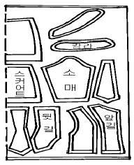
- 150cm
- 110cm
- 90cm
- 70cm
(정답률: 알수없음)
60. 다음 중 의복의 디테일(detail)과 가장 상관이 먼 것은?
- 프릴
- 턱
- 스모킹
- 프린지
(정답률: 알수없음)
4과목: 봉제과학
61. 재봉기의 재봉침을 기호로 나타냄에 있어 다음 중에서 단추달이용 재봉침을 나타낸 기호는?
- B
- D
- G
- P
(정답률: 알수없음)
62. 기계별 레이아우트의 단점 중 틀린 것은?
- 운반거리가 길어진다.
- 반제품이 많아지고 생산기간이 길어진다.
- 작업진도 파악이 어렵다.
- 비교적 1인 1기의 작업자가 필요하다.
(정답률: 알수없음)
63. 검단시의 체크사항이 아닌 것은?
- 폭과 길이의 측정
- 색상의 차이 유무
- 원단 불량의 확인
- 장력의 여유 체크
(정답률: 알수없음)
64. 동작연구의 목적과 가장 관계 없는 것은?
- 순서의 합리화
- 동작의 간소화
- 동작의 필요성
- BPT법의 연구
(정답률: 알수없음)
65. 어떤 봉제작업에 대한 정미시간이 70초, 여유율이 20%일 때의 표준시간은?
- 74초
- 84초
- 140초
- 160초
(정답률: 알수없음)
66. 의류생산 공장의 흐름 작업에서 공정편성 후의 점검 사항 중 해당되지 않는 사항은?
- 편성효율에 의한 확인(line balance 효율)
- 애로공정의 파악
- 전체적인 기계 배치
- 작업자 배치의 적정성
(정답률: 알수없음)
67. 경사와 위사가 모두 36번수 면사로 되고 그 밀도는 경위사 모두 인치당 72 본이 들어간 면직물이 있다. 이 면직물의 경사의 peirce 피복도(밀집도)는?
- 12
- 2
- 0.5
- 360
(정답률: 알수없음)
68. 어태치먼트(attachment)의 종류로서 해머(hemmer)가 하는 역할은 무엇인가?
- 천끝단을 위 또는 아래로 접는 기구
- 천끝을 2중으로 접는 기구로 천끝이 안쪽으로 접혀들게 하는 기구
- 여러겹의 천을 접거나 포개는 기구
- 천 끝단을 다른재료로 감싸는 기구
(정답률: 알수없음)
69. 아래 그림은 무슨 작업을 뜻하는가?
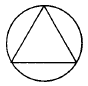
- 손작업
- 아이론
- 프레스
- 본봉미싱
(정답률: 알수없음)
70. 다음의 공정분석 기호에서 검사를 가르키는 것은?
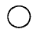
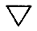
(정답률: 알수없음)
71. 재봉틀 고장 원인 중 실의 땀뜀 현상이 생기는 경우는?
- 노루발 압력에 결함이 있다.
- 북토리에 결함이 있다.
- 보내기 기구에 결함이 있다.
- 실 안내에 결함이 있다.
(정답률: 알수없음)
72. 재봉틀 본체의 모양에 (미싱의 bed형상)의한 분류방식은?
- 세분류
- 소분류
- 중분류
- 대분류
(정답률: 알수없음)
73. 공정분석표 작성의 기본목적과 가장 상관이 먼 것은?
- 가장 효율적인 제조순서를 결정할 수 있다.
- 작업배분을 합리적으로 할 수 있다.
- 생산뿐 아니라 기타의 생산관리에도 유용한 자료를 제공해 준다.
- 품질향상에 커다란 영향을 미친다.
(정답률: 알수없음)
74. 다음의 중 직물의 후처리 가공으로서 물결무늬를 형성시켜 주는 가공은?
- 엠보싱 캘린더
- 슈라이너 캘린더
- 무아레 캘린더
- 텐터링
(정답률: 알수없음)
75. 편성물 봉제 시 가장 고려해야 할 사항은?
- 고속봉제(4000rpm이상)도 적합하다.
- 스티치의 길이가 길수록 좋다.
- 노루발의 바닥은 테프론 처리된 것이 좋다.
- 바늘 끝이 볼 포인트인 것이 좋다.
(정답률: 알수없음)
76. 2본사 체인스티치 시임(two thread chainstitch seam)에서 외면 교차란 어떤 경우인가?
- 양 봉사의 교차가 천의 아랫면에서 일어나는 경우를 말한다.
- 양 봉사의 교차가 천 중 재봉바늘이 침투구멍 내에서 일어나는 경우이다.
- 양 봉사의 교차가 천 중 재봉바늘의 침투구멍 반대측에서 일어나는 경우이다.
- 양 봉사의 교차가 천의 윗면에서 일어나는 경우이다.
(정답률: 알수없음)
77. 표준시간의 측정에 필요한 용구가 아닌 것은?
- 스톱워치
- 관측판
- 관측용지
- 난수표
(정답률: 알수없음)
78. 다음 그림은 어떤 Seam 이라 부르는가?
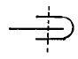
- BS (Bound Seam)
- FS (Flat Seam)
- LS (Lapped Seam)
- SS (Superimposed Seam)
(정답률: 알수없음)
79. 그림과 같은 스티치(stitch)를 무엇이라고 하는가?
- 록(Lock)스티치
- 핸드(Hand)스티치
- 체인(Chain)스티치
- 오버에지(Overedge)스티치
(정답률: 알수없음)
80. 퍼카링(puckering)의 발생원인과 가장 관계 없는 것은?
- 노루발의 압력이 너무 강할 때
- 밑실의 장력이 강할 때
- 톱니의 잇발이 성글 때
- 마찰이 적은 원단일 때
(정답률: 알수없음)
5과목: 섬유제품시험법 및 품질관리
81. 인장강신도 시험기의 원리분류와 관계없는 것은?
- 정속하중식(CRL형)
- 정속상강식(CRM형)
- 정속인장식(CRE형)
- 정속하강식(CRT형)
(정답률: 알수없음)
82. 봉제품의 평가에 있어서 봉제전의 원단 길이 3㎝가 봉제후에 1㎝가 되었을 때의 개더링(gathering)율은?
- 33.3%
- 66.7%
- 200%
- 300%
(정답률: 알수없음)
83. 다음 그림은 섬유장 측정을 위한 스테이플 다이아그램이다. 클레그 (Clegg)법으로 해석할 때 유효 섬유길이를 나타내는 것은?
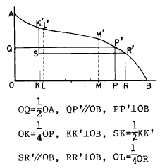
- KK'
- LL'
- PP'
- RR'
(정답률: 알수없음)
84. 시장조사에 의해서 결정되어지는 품질로서 가장 중요시 하여야 하는 것은?
- 제조품질
- 생산품질
- 설계품질
- 적합품질
(정답률: 알수없음)
85. 염색 견뢰도 측정시 일광에 의해 전혀 변ㆍ퇴색이 일어나지 않았을 때의 표시등급은?
- 8급
- 5급
- 1급
- 3급
(정답률: 알수없음)
86. 옷의 취급방법을 설명한 다음 그림은 어떤 의미인가?
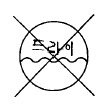
- 물세탁 할 수 없음
- 삶을 수 없음
- 드라이클리닝 할 수 없음
- 세탁기로 세탁할 수 없음
(정답률: 알수없음)
87. 요소포름알데히드 수지로 처리하여 D.P 가공한 면직물로 부터 요소포름알데히드 수지를 용해 제거할 때 이용될 수 있는 시약은?
- 염산
- 아세톤
- 피리딘
- 슈바이처 시약
(정답률: 알수없음)
88. 섬유의 건조 중량에 공정수분율을 가산한 무게는?
- 정량
- 절건 무게
- 항량
- 표준 무게
(정답률: 알수없음)
89. 비누를 사용하여 손빨래를 할 경우 착색물의 퇴색이나 오염정도를 측정하여 보고자 한다. 가장 적절한 실험방법은 어느 것인가?
- wash wheel 법
- laund-ometer 법
- dry cleaning 법
- 비누액 법
(정답률: 알수없음)
90. 다음은 피복의 세탁 및 건조중에 발생하는 변질과 취화에 대한 설명이다. 맞지 않는 것은?
- 섬유의 손상을 적게하기 위해서는 중성세제를 사용하고 가벼운 기계적 힘을 가해야 한다.
- 친수성이 큰 섬유가 소수성이 큰 합성섬유보다 손상이 더욱 크다.
- 일광에 장시간 바래면 섬유는 취화된다. 가장 심하게 취화되는 섬유는 아세테이트이다.
- 세탁은 피복을 손상하지 않고 오염만 제거하는 것이 이상적이다.
(정답률: 알수없음)
91. 주요 천연섬유의 열 전도율이다. 적합한 것은?
- 양모 < 견 < 면 < 아마
- 면 < 양모 < 견 < 아마
- 견 < 면 < 아마 < 양모
- 아마 < 면 < 견 < 양모
(정답률: 알수없음)
92. 현미경으로 섬유를 관찰할 때 대물렌즈의 배율이 100, 대안렌즈의 배율이 10 이면, 이 때 관찰된 섬유는 몇 배로 확대되어 보이겠는가?
- 10
- 100
- 1,000
- 110
(정답률: 알수없음)
93. 직물의 방수성을 결정하는 외적인자와 관계가 가장 먼 것은?
- 직물의 조직
- 직물과 접촉하는 물의 량
- 직물과 물의 온도
- 방수제의 성질
(정답률: 알수없음)
94. 면사의 길이가 1680 yd 이고 무게가 1온스(oz)이면 이실의 번수(영국식번수)는?
- 5
- 12
- 24
- 32
(정답률: 알수없음)
95. 백색의 머어서화면과 미처리면을 감별하기에 적합한 시험 방법은?
- 연소시험
- 용해도시험
- 비중측정시험
- 염색시험
(정답률: 알수없음)
96. 영국식 면사 30번수의 표시가 바르게 된 것은?
- 30'S
- 30 D
- d/30
- 30 Tex
(정답률: 알수없음)
97. 직물의 건조중량을 W', 공정수분율을 r이라고 하면 이 직물의 정량(W)은?
- W = W'(1-r/100)
- W = W'(1+r/100)
- W = W'(1-r)
- W = W'(1+r)
(정답률: 알수없음)
98. 다음 표시 내용 중 가장 적절하다고 판단되는 것은?
- 순면
- 양모80% 기타
- 나일론40%
- 비닐론30% 기타15% 나일론
(정답률: 알수없음)
99. 다음 섬유 중 아세톤에 녹는 것은?
- 나일론
- 폴리에스텔
- 면
- 아세테이트
(정답률: 알수없음)
100. 계면활성제의 성질은 친수기와 친유기의 바란스 즉 HLB(hydrophile-liphophil balance)에 영향을 받는다. 친수성이 가장 큰 HLB의 값은?
- 0
- 10
- 15
- 20
(정답률: 알수없음)